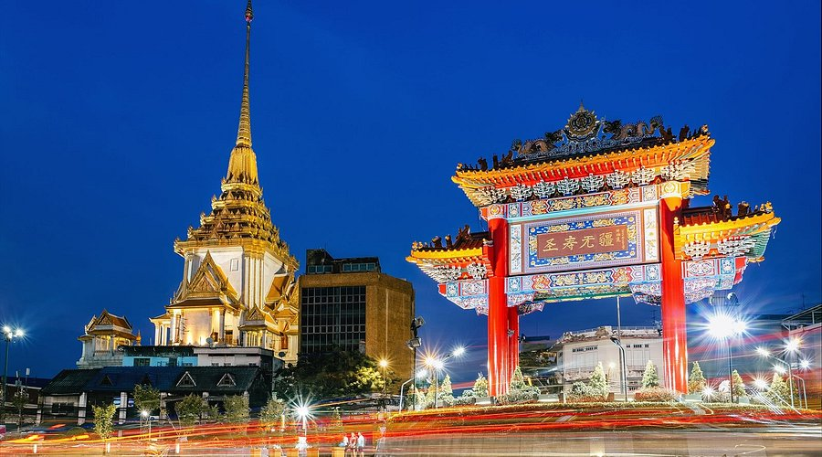

Yaowarat (Chinatown)
Bangkok's vibrant Chinatown comes alive at night with incredible street food, from dim sum to fresh seafood and traditional desserts.
Best Time: 6:00-11:00 PM | Must Try: Shark fin soup, bird's nest | Transport: MRT to Hua Lamphong